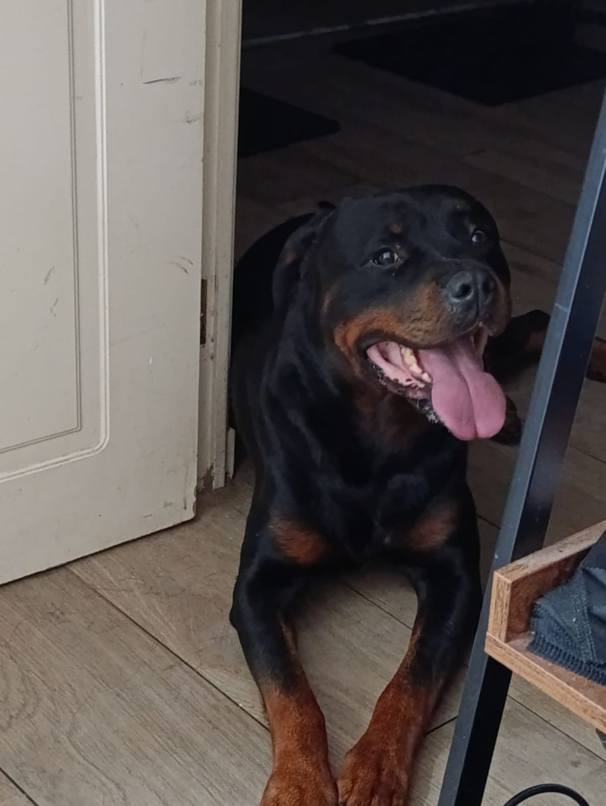
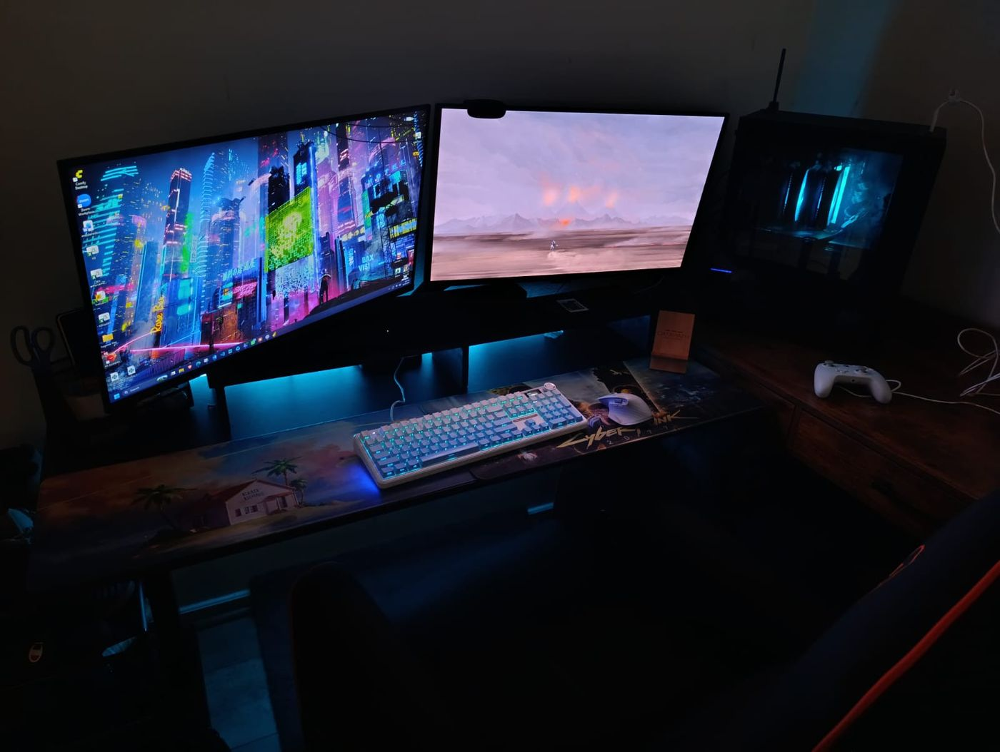

Data Analyst // SQL · Python · Power BI // Data Pipelines & Automation
// SELECT TRACK
// 01.1 — WHOAMI
ABOUT ME
I'm a data analyst from Chile who likes owning the whole path of the data: pulling it out of the
platforms where it's born, landing it clean in SQL Server, automating the refresh, and
turning it into Power BI reports that people actually open. At OurRescue I do that for
fundraising, marketing, e-commerce, finance and mission teams.
I studied Computer Information Technology in the US, so I'm as comfortable writing the Python and
T-SQL behind a report as I am designing the report itself, and I work in
Spanish and English.
> education
Bachelor's in Computer Information Technology · BYU-Idaho · Rexburg, Idaho, USA
Datapath certification · Derby, England
> also
Two years of full-time volunteer service as a missionary for The Church of Jesus Christ of Latter-day Saints
// 01.2 — DATA ANALYST
OURRESCUE
DATA ANALYST · NONPROFIT · SQL SERVER + POWER BI
OurRescue is a nonprofit that fights child trafficking and exploitation. Its teams run on a dozen
different platforms, from the donation forms and the CRM to the online store, ads and social media, and
each one keeps its own data. I built the layer that brings them together: Python jobs that pull
each platform's data into SQL Server, on a schedule, and the Power BI
reports that each department uses to make decisions.
sources
GivingDonations · CRM
CommerceStore · Shipping
MarketingAds · Social · Web
PythonETL jobs
SQL ServerStage → Merge
ReportingPower BI
10+connected platforms
30+Power BI reports
40+Python ETL scripts
1hfastest refresh cycle
> what I do
Data pipelinesPython ETL from REST APIs (donations, CRM, Shopify, ShipStation, GA4, Google Ads, Meta, YouTube, volunteer and matching-gift platforms) into SQL Server staging tables, with retries, pagination and incremental loads.
SQL ServerT-SQL that turns raw stage tables into reporting tables: MERGE upserts, deduplication, date and text cleanup, and window functions for donor retention, recurring giving and lapse-risk analysis.
AutomationJobs scheduled with SQL Server Agent and Task Scheduler, from hourly donation syncs to daily loads, plus a Playwright bot that downloads a report from a platform with no API.
Power BIReports for fundraising and recurring donors, marketing, the online store, budget vs. actuals, HR, and the impact of the K-9 and law-enforcement support programs.
> sample query // fictional schema, same idea
-- LYBUNT: gave Last Year But Unfortunately Not This yearWITH yearly AS (
SELECT donor_id,
YEAR(gift_date) AS gift_year,
SUM(amount) AS total
FROM dbo.gifts
GROUP BY donor_id, YEAR(gift_date)
)
SELECT ly.donor_id, ly.total AS last_year_total
FROM yearly ly
LEFT JOIN yearly ty
ON ty.donor_id = ly.donor_id
AND ty.gift_year = ly.gift_year + 1WHERE ly.gift_year = YEAR(GETDATE()) - 1AND ty.donor_id IS NULLORDER BY ly.total DESC;
> stack
SQL ServerT-SQLSQL Server AgentPythonpandaspyodbcSQLAlchemyREST APIsPlaywrightBigQueryPower BIDAXPower QueryPower AppsExcel
// 99.3 — SIDE QUEST
BONUS

Congrats on making it this far down: you unlocked my work-from-home buddy. Head of
security, in charge of reminding me to take breaks and of supervising every deploy from the doorway 🐾
// 02 — DASHBOARDS
BI SAMPLES
My work reports can't leave the building, so these are public samples built the same way, on
fictional data, so they can be fully public.
Tender marketIN THE LAB
Coverage map with radiusIN THE LAB
Operations reportsIN THE LAB
// 99.1 — SIDE QUEST
BONUS
If you got this far, then you deserve a picture of the Chilean National Stadium where the most amazing
football team plays: Universidad de Chile 💙
// 03.1 — IN PRODUCTION
HAGOTEK
AV & SECURITY INTEGRATOR · CHILE · CO-OWNER & SOLE DEVELOPER
Hagotek is a Chilean company that designs and installs audio, video, electronic security and smart
lighting systems across the country. I'm one of its co-owners, and I built its two pieces of software
on my own: the public website and the ERP the company runs on.
A Website
A bilingual Spanish / English site with a page for each service and a direct WhatsApp line
for quotes. Static, built with Astro, deployed on Netlify and with a sitemap
for search engines.
A private web app that covers the whole commercial cycle: a quote becomes a sales order, the order produces
dispatch notes and invoices, and every tax document is issued electronically to Chile's tax service
(SII). The team uses it every day. Its data is real client information, so instead of
screenshots, this is how documents flow through it:
01Quote
02Sales order
e-documents
DTE 52Dispatch note
DTE 33Invoice
↳
DTE 61Credit note
Tax serviceSII
3SII e-document types
8business modules
5user roles
24data models
> capabilities
Quotes and sales orders with per-line cost and margin, and prices in CLP or USD per product
Electronic invoices, dispatch notes and credit notes issued to the SII through the Soluciones Market DTE engine, with RUTs and SII field limits validated before emitting
Dispatch notes that discount stock, purchase orders with goods receipt, and low-stock alerts
Projects with tasks and attachments, plus a draw.io-style editor for AV and network connectivity diagrams
Expenses by cost center, VAT and profitability reports, and a dashboard with sales rankings
Five roles with server-side permission checks, account lockout after 5 failed logins and encrypted backups
A staging copy of production that blocks real tax documents, for testing changes safely
Chile's public institutions buy through Mercado Público, the state procurement platform.
Paid platforms sell tender alerts as a monthly subscription; this one is built into the ERP and tuned to
exactly what Hagotek installs. Every morning a GitHub Actions job pulls the open tenders,
scores the ones it hasn't seen yet and keeps the relevant ones. Unlike the rest of the ERP, this module only
works with public data, so it gets a real screenshot:
LIVE_FEED // tendersDAILY SYNC
> tap / click to open full size
> how it decides
Weighted keyword rules for five categories (audio, audiovisual, CCTV / security, access control, automation); a match in the title or description weighs more than one buried in the item list
The UNSPSC product codes of each item add to the score
Filters out tenders that only match by shared words (security guards, medical hearing aids…) and one-off event rentals
Flags the ones that include on-site installation, not just shipping boxes
Keeps tracking saved tenders after they close, to see whether they were awarded or declared void
Emails a morning digest of the new matches through Resend, with HTML built to render in Outlook
In the ERP: open / following / discarded views, category and installation filters, search, and a status for each tender from New to Bidding to Won or Lost
Deliberately simple: hand-tuned rules refined by checking what gets in and what doesn't, not a model
REAL-TIME VOICE AI COMPANION · LANGUAGE COACH · WINDOWS · ANDROID
A desktop voice assistant I talk to through my earbuds. It streams audio to the
Gemini Live API (or the OpenAI Realtime API) over WebSockets, answers in a
natural voice and can be interrupted mid-sentence. Its listener modes stay silent during meetings and only
whisper a correction when someone says something false, a neutral counterpoint to sweeping opinions, or a
useful fact, checking Wikipedia before correcting.
It's also the perfect partner to learn English, Spanish, Portuguese or Japanese: it talks
with you in the language, corrects your mistakes on the spot and saves them so you can review them later.
LIVE_FEED // mi-asistente.exeREC
4languages to learn
30selectable voices
11memory folders
7personality modes
> capabilities
Real-time speech-to-speech with server-side voice detection, barge-in and automatic session resumption
Language-coach modes for English, Spanish, Portuguese and Japanese that correct mistakes as you speak
Fact-checker modes with Wikipedia lookups, and Google Search when the API plan allows it
Long-term memory in SQLite organized in folders (agenda, music, learning…), searchable by voice and in the app
Editable personalities as Markdown profiles, 30 voices, sleep mode and global hotkeys
Warm light/dark desktop UI built with customtkinter
Scripted server-event tests for interruptions, tool calls and reconnects, all offline with Pytest
> stack
PythonasyncioGemini Live APIOpenAI Realtime APIWebSocketsSQLiteNumPysounddevicecustomtkinterPytest
> free demo // windows 10-11 // 41 MB zip // unzip and run Mi Asistente.exe. Use earbuds. If Windows says "protected your PC", click More info → Run anyway.
> android 10+ // 31 MB apk // open it on your phone and allow installing from your browser, then give it the microphone.
// 99.2 — SIDE QUEST
BONUS

Congrats on making it this far down: you unlocked my netrunner rig. Two screens, a
keyboard glowing cyan and a Cyberpunk 2077 desk mat. Every build on this page was jacked in from here 🦾